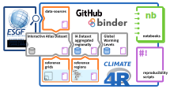

Repository supporting the implementation of FAIR principles in the IPCC-WGI Atlas#
The WGI Atlas is part of the AR6 report and provides a region-by-region assessment of climate change including also an innovative online tool (the Interactive Atlas, [IPCC AR6-WGI Atlas] that complements the report [Gutiérrez et al., 2021] by providing flexible spatial and temporal analyses of regional climate change by means of two components (see AR6 Atlas chapter, Sections 1 and 2). The regional information component allows for flexible analysis of past and projected changes for over 25 variables and derived indices calculated from key climate datasets supporting the assessment done in the Chapters. The regional synthesis component provides flexible anlysis of synthesis assessments over a new set of sub-continental reference regions supporting the Technical Summary and Summary for Policymakers. A description of the datasets
The IPCC AR6 WGI report promotes best practices in traceability and reproducibility, including through adoption of the Findable, Accessible, Interoperable, and Reusable (FAIR) principles for scientific data. In particular, reproducibility and reusability are central in order to ensure the transparency of the products, which are all publicly available. The Atlas products are generated using free software community tools, in particular R [The R foundation] building on the climate4R [SantanderMetGroup/climate4R, 2022]framework for data post-processing (data access, regridding, aggregation, bias adjustment, etc.) and evaluation and quality control (when applicable). Provenance metadata is generated for the Interactive Atlas using the METACLIP [Bedia et al.] RDF-based framework, extended to cover the products delivered by the IPCC-AR6 Interactive Atlas [Metaclip/Metaclipcc: METACLIP for the IPCC-AR6 Interactive Atlas Version 1.1.1 from GitHub].
Contents#
This repository provides the scripts and notebooks, as well as the required auxiliary products and datasets, supporting the reproducilibility and reusability of some of the Atlas products (mainly key figures in the Chapter and data-driven products of the Interactive Atlas – regional information component), as described in the following schema and table of contents.

Directory |
Contents |
|---|---|
Full list of model simulations used for the different experiments and scenarios, indicating the availability of the different variables |
|
Reference commensurable grids at regular 0.5°, 1° and 2° resolutions. These are used to interpolate all variables and indices as a final processing step before analysis. |
|
End-to-end scripts used for the preparation of the intermediate data (Interactive Atlas Dataset) underpinning the Interactive Atlas. The Interactive Atlas Dataset is formed by monthly values of CMIP5/6 and CORDEX data for different variables and indices interpolated to common reference grids. The scripts document the whole process, from data access to index calculation (and postprocessing –e.g. bias adjustment– if needed). |
|
New set of reference analysis regions in AR6 |
|
The Interactive Atlas Dataset is averaged over the reference regions to produce many of the figures. These key aggregated data are provided directly for further analysis within this Github repository folder. |
|
Global Warming Levels (+1.5°, +2°, +3°, +4°) are computed and provided in this folder. |
|
Cross-cutting Jupyter notebooks, combining the information from several of the previous directories to perform specific analyses. |
|
End-to-end scripts used for the preparation of the key figures of the IPCC AR6 WGI Atlas chapter. |
|
Files providing reproducible execution environment specifications |
New Reference Regions#

A new set of reference regions was produced building on the popular IPCC AR5 reference regions [AR5] developed for reporting sub-continental CMIP5 [CMIP5] projections (with typical resolution of 2°) over a reduced number of regions. The increased resolution of CMIP6 [CMIP6] and CORDEX [Cordex – Coordinated Regional Climate Downscaling Experiment] projections(typically 1° and 0.5°) allowed to increase the number of regions for a better representation of different climates, resulting in new set of 46 land and 14 ocean reference regions [Iturbide et al., 2020]. The coordinates delimiting the regions (CSV and shapefiles) and other related datasets are available at the reference-regions repository folder.
Regionally-aggregated datasets (CMIP and CORDEX)#
The IPCC reference regions have been used as the basis to generate popular spatially-aggregated datasets, such as the IPCC AR5 seasonal mean temperature and precipitation in IPCC regions for CMIP5 [van Vuuren et al., 2011]. Here, we provide a new aggregated dataset using CMIP5, CMIP6 and CORDEX projections (interpolated to common 2°, 1°, and 0.5° resolution, respectively, see reference-grids) for the new regions. Monthly mean values are stored for CMIP5/6 and CORDEX for the historical (1850-2005/1850-2014, only 1970-2014 for CORDEX) and future RCP2.6/SSP1-2.6, RCP4.5/SSP2-4.5, SSP3-7.0 and RCP8.5/SSP5-8.5 scenarios. An inventory of the currently available models and runs is available at the data-sources folder.
Besides the analysis of time-slices (e.g. near-, mid- and long-term, 2021-2040, 2041-2060, 2081-2100, respectively), we also provide information to work with Global Warming Levels (1.5°, 2°, 3°, 4°) under warming-levels.
Requirements#
Scripts and (jupyter) notebooks are provided in the different sections to ensure reproducibility and reusability of the results. Most of this code builds on the climate4R R package, allowing for transparent climate data access, collocation, post-processing (including bias adjustment) and visualization. The code runs on climate4R release v2.5.3. Check the Clime4R repository mentioned above for specific library versions in this release. These depend on a wealth of other R packages. Additionally, Jupyter [Project Jupyter] should also be available with the R kernel [Installation · IRkernel] enabled. The simplest way to match all these requirements is by using a dedicated conda environment [Conda — Conda Documentation], which can be easily installed by issuing:
conda env create -n ipcc-wgi-ar6-atlas --file binder/conda/environment.yml
conda activate ipcc-wgi-ar6-atlas
See binder for other options to deploy locally a reproducible execution environment.
Virtual workspace through binder#
A much straigtforward way to explore and interact with this repository is through Binder [Binder]. Binder provides an executable environment, making the code immediately reproducible. The required software is pre-installed in a cloud environment where the user can create and execute notebooks (directly) and scripts (via the available Terminal). Moreover, the environment is accesible without any further authentication by the user.
To start exploring the binder interface, just click the Launch in MyBinder badge above. You will arrive at a JupyterLab interface [The JupyterLab Interface — JupyterLab 3.4.4 Documentation] with access to the contents of this repository.
Errata and problem reporting#
The errata of the Atlas covers both the content (products, such as plots and data) and the application/platform of the Interactive Atlas, as well as this GitHub repository supporting reproducibility and reusability. The existing products are frozen and the issues reported are documented in the errata list. Technical problems are listed separately and those not affecting the products could be fixed and documented.
Information
Notebooks
- Computing and visualizing regional climate change (temperature vs precipitation) for reference regions
- Computing and visualizing transient global warming levels
- Atlas notebooks
- Selecting reference regions used for every CORDEX domain
- GeoTIFF file post-processing: Spatial operations
- Calculation and hatching of the uncertainty in projected delta changes.
- Computing and visualization of precipitation linear trends during the observed period (1980-2014)
- Using the Atlas reference grids in
R - Using the 4th version of the IPCC WGI reference regions in Python
- Using the 4th version of the IPCC WGI reference regions in R
- Create stripes of anual temperature and precipitation mean values.
Appendix
- Errata and problem reporting
- Reproducibility scripts
- Auxiliary Materials for Notebooks
- Binder image deployment
- Code for reproducibility of the Atlas Map figures of model projections
- Code for reproducibility of the ATLAS spatial maps of the observed linear trends
- Bash interpolation scripts
- AtlasCDOremappeR for CORDEX RCM simulations
Bibliography#
Binder. https://mybinder.org/.
Conda — Conda documentation. https://docs.conda.io/en/latest/.
Cordex – Coordinated Regional Climate Downscaling Experiment. https://cordex.org/.
Installation · IRkernel. https://irkernel.github.io/installation/.
Metaclip/metaclipcc: METACLIP for the IPCC-AR6 Interactive Atlas version 1.1.1 from GitHub. https://rdrr.io/github/metaclip/metaclipcc/.
Project Jupyter. https://jupyter.org.
The JupyterLab Interface — JupyterLab 3.4.4 documentation. https://jupyterlab.readthedocs.io/en/stable/user/interface.html.
CMIP5. https://www.wcrp-climate.org/wgcm-cmip/wgcm-cmip5.
CMIP6. https://www.wcrp-climate.org/wgcm-cmip/wgcm-cmip6.
IPCC AR6-WGI Atlas. https://interactive-atlas.ipcc.ch/atlas.
SantanderMetGroup/climate4R. https://github.com/SantanderMetGroup/climate4R, July 2022.
ipcc AR5. AR5 Regions. https://www.ipcc-data.org/guidelines/pages/ar5_regions.html.
Joaquín Bedia, José Manuel Gutiérrez, Sixto Herrera, Maialen Iturbide, and Daniel San Martín. METACLIP: Metadata for climate products. http://www.metaclip.org/.
José Manuel Gutiérrez, Richard G. Jones, Gemma Teresa Narisma, Lincoln Muniz Alves, Muhammad Amjad, Irina V. Gorodetskaya, Michael Grose, Nana Ama Browne Klutse, Svitlana Krakovska, Jian Li, Daniel Martínez-Castro, Linda O. Mearns, Sebastian H. Mernild, Thanh Ngo-Duc, Bart van den Hurk, and Jin-Ho Yoon. Atlas. In Valérie Masson-Delmotte, Panmao Zhai, Anna Pirani, Sarah L. Connors, Clotilde Péan, Sophie Berger, Nada Caud, Yang Chen, Leah Goldfarb, Melissa I. Gomis, Mengtian Huang, Katherine Leitzell, Elisabeth Lonnoy, J. B. Robin Matthews, Thomas K. Maycock, Tim Waterfield, Özge Yelekçi, Rong Yu, and Botao Zhou, editors, Climate Change 2021: The Physical Science Basis. Contribution of Working Group I to the Sixth Assessment Report of the Intergovernmental Panel on Climate Change, pages 1927–2058. Cambridge University Press, Cambridge, United Kingdom and New York, NY, USA, 2021. doi:10.1017/9781009157896.001.
Maialen Iturbide, José M. Gutiérrez, Lincoln M. Alves, Joaquín Bedia, Ruth Cerezo-Mota, Ezequiel Cimadevilla, Antonio S. Cofiño, Alejandro Di Luca, Sergio Henrique Faria, Irina V. Gorodetskaya, Mathias Hauser, Sixto Herrera, Kevin Hennessy, Helene T. Hewitt, Richard G. Jones, Svitlana Krakovska, Rodrigo Manzanas, Daniel Martínez-Castro, Gemma T. Narisma, Intan S. Nurhati, Izidine Pinto, Sonia I. Seneviratne, Bart van den Hurk, and Carolina S. Vera. An update of IPCC climate reference regions for subcontinental analysis of climate model data: definition and aggregated datasets. Earth System Science Data, 12(4):2959–2970, November 2020. doi:10.5194/essd-12-2959-2020.
The R foundation. R: The R Project for Statistical Computing. https://www.r-project.org/.
Detlef P. van Vuuren, Jae Edmonds, Mikiko Kainuma, Keywan Riahi, Allison Thomson, Kathy Hibbard, George C. Hurtt, Tom Kram, Volker Krey, Jean-Francois Lamarque, Toshihiko Masui, Malte Meinshausen, Nebojsa Nakicenovic, Steven J. Smith, and Steven K. Rose. The representative concentration pathways: an overview. Climatic Change, 109(1-2):5–31, November 2011. doi:10.1007/s10584-011-0148-z.